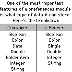

PrefContainer vs. Prefs Module X Server
 Almost
all applications ever made have preferences files. Just look at your preferences
folder! Most have over 500 items in them, and some have over a thousand. Just imagine
what life was like before System 7 and the preferences folder!
Unlike Windows, there are no real standards for making a preference
file on a mac. The basic idea, more or less, is take all the data in your app, open
up a file with your app's name, and then the word "preferences", and dump
all the data in there however you like. When writing an app, the typical procedure
for doing this is to create an application object, and give it LoadPrefs, SavePrefs,
and CreatePrefs methods, all of which are called at appropriate times. However, finding
ways to write and read all the data is often quite pesky, and takes away valuable
time that could have been spent working on more relevant parts of your project.
Steve Lobaso and David Newberry have both written packages to help
you out with your program's preferences. They both offer very similar feature sets,
and thus, they make a great pair for a vs. review.
Prefs Module X Server, which is written by David Newberry, is the
simplest of the two. Simply call the SetName method, and supply it with
the name of the preferences file, and its creator code. From then on, you can simply
use statements like GetStringValue, or SetColorValue, which both
do what their names imply. The Get methods all take three parameters—the
name of the preference (ie, "User's Name"), the default value, and whether
or not it's encrypted. If the preferences file doesn't exist, the default is used.
Otherwise, the correct preference is given to you. Couldn't be simpler.
Writing preferences is equally simple. The Put methods take
three parameters as well: the name of the preference, the value, and whether or not
to encrypt it. Encryption is very useful if the data is something that others shouldn't
see, such as a password. Unfortunately, Module X Server only encrypts one way—you
can't specify a key. This limits the value of the encryption feature, but it's still
useful.
PrefContainer is similar in many ways to Module X Server. The primary
difference is that PrefContainer is a class, not a module. This makes it possible
to have multiple preferences files in one application, though that's not a particularly
useful ability.
To start off, you create a new PrefContainer object, and instantiate
it. You'll want to put this variable at a spot accesible to the rest of the program,
such as the application object, or a module.
Next, you call its Init method, which takes the name of the file as
its only parameter. After this, the PrefContainer works a bit differenty. In PrefContainer,
immediately after calling the Init method, you set all the default data. To do this,
you simply act as if you were writing data to the preferences file. This is hardly
the most intuitive setup, but it works, and it's fairly simple to adjust to.
Next, you call the Read method, which reads all of the data
into the class. From then on, this class is extremely simple. Just call its Get
methods do retrieve all of your data. They each take a single parameter: The data's
name.
Finally, to write data to the file, you use the Put methods,
and call PrefContainer's Write method. It may sound a bit more complex than
Prefs Module X Server, and it is. However, it's quite easy to adjust to.
If you need encryption, or need to store date and folderitem objects,
PrefContainer is your best bet. Otherwise, Prefs Module X Server will do a fine job,
and does it much more simply.
Prefs Module X Server
Pros: Supports 5 relevant data types. Extremely simple.
Cons: Doesn't support pictures, dates, or folderitems. Example project
has errors in it. Documentation is riddled with typos.
|
|
PrefContainer
Pros: Supports seven data types, including date and folderitem. Supports
encryption.
Cons: Can't store pictures, or various other types of data. Documentation
only in about box. More complicated.
|
|